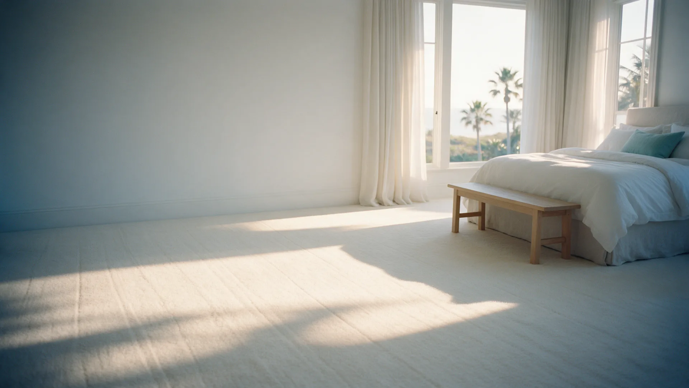
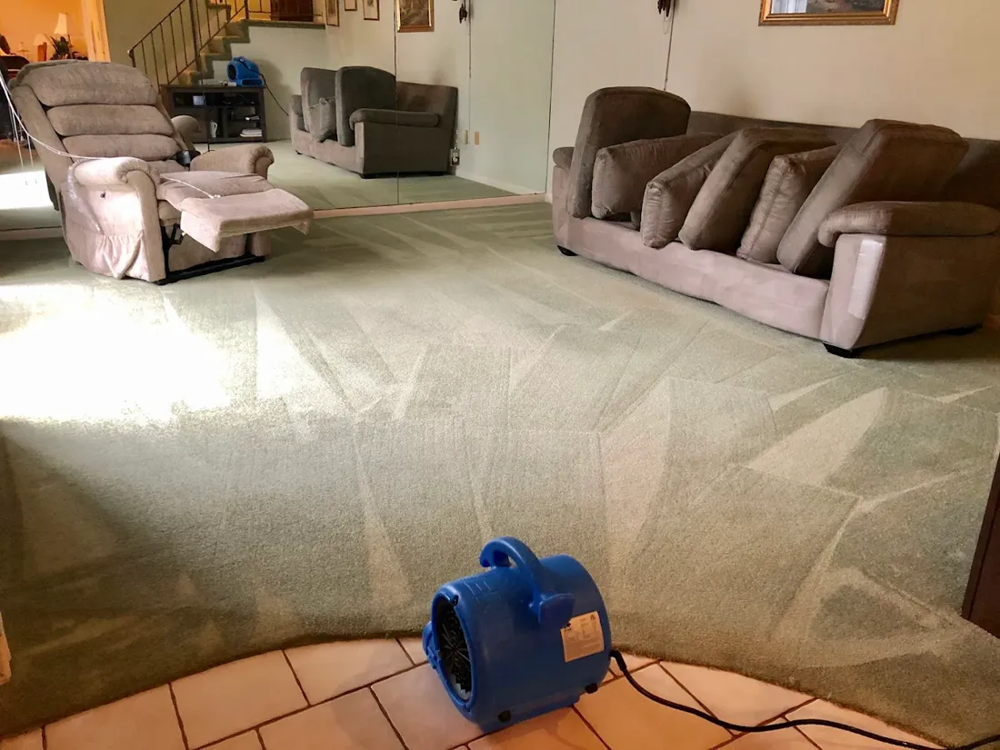
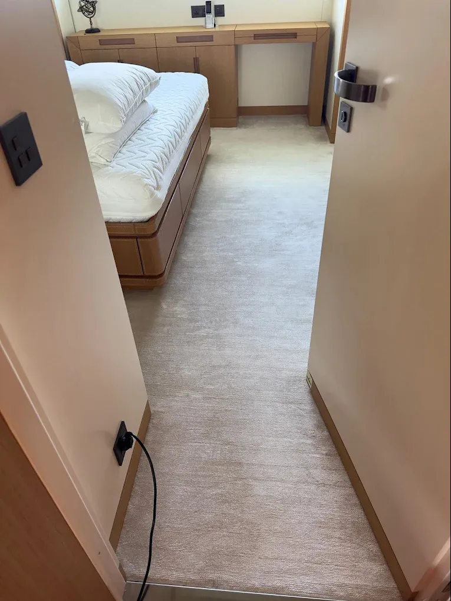
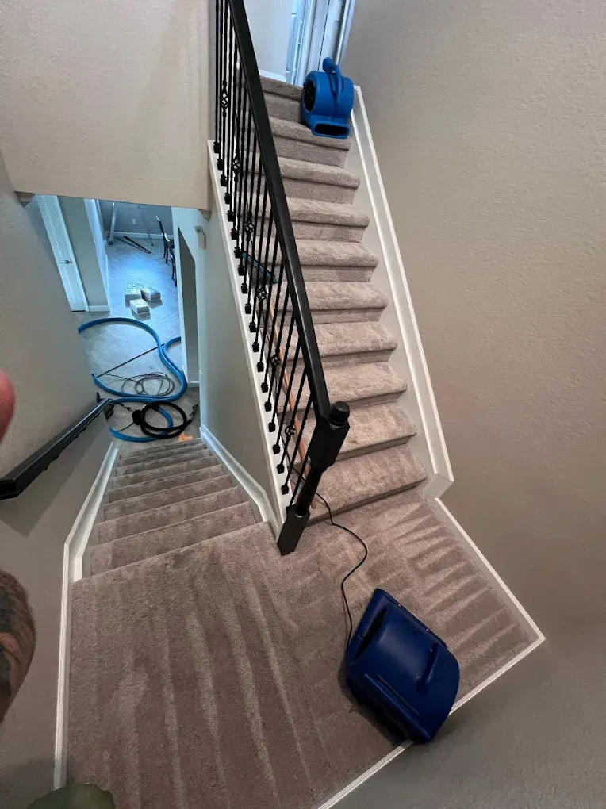
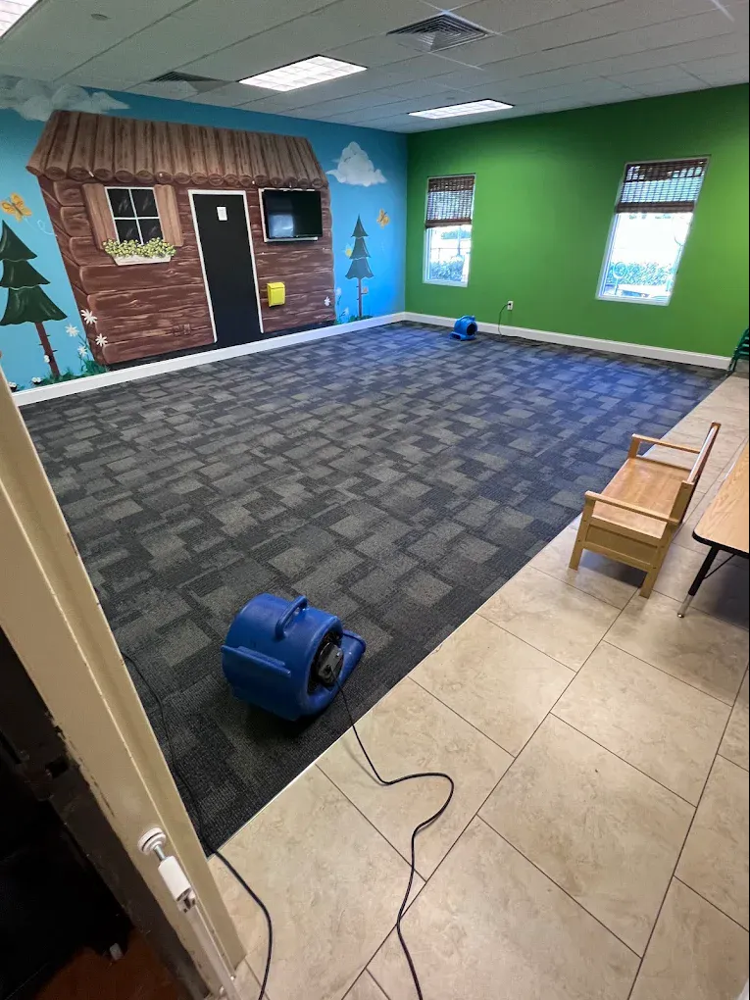
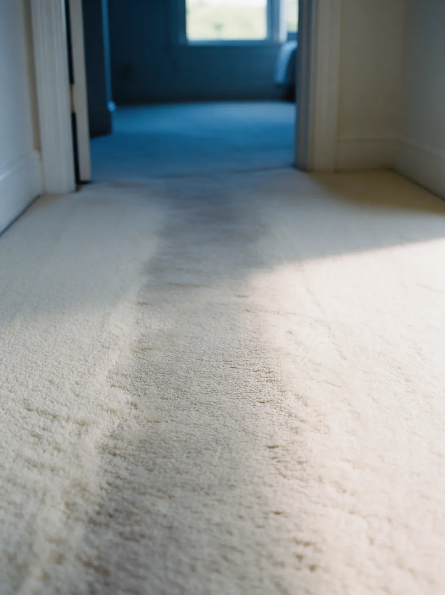

Carpet cleaning in Palm Beach County
Traffic lanes lifted, pile restored and no sticky residue left behind. Eco-friendly, pet-safe and backed by a 100% satisfaction guarantee.
- 240five-star Google reviews
- 15+years in Palm Beach County
- 100%satisfaction guarantee
How does Harbor clean carpet?
Harbor cleans carpet in seven steps: a pre-inspection with home protection, a deep vacuum, a pre-spray left to dwell, agitation with an Austrian-engineered bristle machine, hot-water extraction, dry passes to pull out moisture, and air movers to speed drying.
The solutions are eco-friendly, non-toxic and safe for pets, nothing sticky is left in the fibers, and every clean is backed by a 100% satisfaction guarantee.
Drag to compare. An illustration of bedroom carpet before and after a deep clean: years of matted, greyed traffic lanes, refreshed.
Our seven-step carpet process
Vacuuming takes off what sits on top. These seven steps reach what is trapped down in the pile.
Inspect and protect
We walk the rooms with you, note traffic areas and spots, and put down corner guards and floor runners.
Deep vacuum
A professional vacuum pulls out the dry soil and sand first, so the wet clean works on what is left.
Pre-spray and dwell
A pre-spray goes down and is left to dwell, loosening oils, soil and stains from the fibers.
Machine agitation
An Austrian-engineered bristle machine works the solution through the pile from every direction.
Hot-water extraction
Hot water rinses the fibers and pulls the loosened soil out of the carpet, instead of pushing it deeper.
Dry passes
Extra passes with no water draw out as much moisture as possible.
Air movers
Air movers go down to speed drying, so your rooms are back in use sooner.
What we clean, and what we lift out
Wall-to-wall carpet in every room, and the marks life leaves in it.
- Bedrooms, living rooms and family rooms
- Stairs and hallways
- Carpet tile in offices and play rooms
- Traffic lanes and matted, flattened pile
- Embedded soil, sand and everyday spots
- Pet stains and odors, with pet stain & odor removal
Real carpet cleaning jobs
Photographs taken by the Harbor crew in Palm Beach County.





Why carpet looks tired in South Florida
The grey you see is mostly below the surface, where a vacuum cannot reach.
- Sand
- Fine sand from the beach and the yard works down into the pile and grinds at the fibers with every step.
- Humidity
- Damp air helps soil and oils cling to fibers, and can leave carpet smelling musty.
- Traffic
- The same paths every day flatten the pile, and flattened pile holds soil and shows it as grey lanes.
Carpet cleaning questions, answered
Will my carpet feel sticky after cleaning?
No. Harbor's process rinses the fibers with hot-water extraction and finishes with dry passes, so no sticky residue is left behind to attract new dirt.
How long does carpet take to dry?
Dry passes pull out as much moisture as possible, and air movers are set up to speed drying, so carpet dries fast. Your technician will tell you when the rooms are ready to use.
Is carpet cleaning safe for kids and pets?
Yes. Harbor uses eco-friendly, non-toxic cleaning solutions that are safe for pets and families.
Can you remove pet stains and odors from carpet?
Yes. Pet stains and odors are treated as part of Harbor's pet stain and odor removal service, which targets the source rather than masking the smell.
Do you offer carpet protection?
Yes. An optional fiber protection treatment can be applied after cleaning to help the carpet resist future spills and stains.
How much does carpet cleaning cost?
Every quote is personalized, because cost depends on the number of rooms, the size of the area and the condition of the carpet. Request a free personalized quote online or call or text (561) 301-1977.
Is there a guarantee?
Yes. Harbor's carpet cleaning is backed by a 100% satisfaction guarantee.
Carpet cleaning near you
- Jupiter
- Palm Beach Gardens
- Palm Beach Island
- West Palm Beach
- Wellington
- Boynton Beach
- Delray Beach
- Boca Raton
- Deerfield Beach
Get a Personalized Quote for carpet cleaning
Tell us about your rooms and we will get back to you with a personalized estimate. Prefer to talk? Call or text (561) 301-1977.
Your request is ready.
Send it to Harbor by text or email. Nothing is sent until you choose.
Text it to Harbor Email it instead